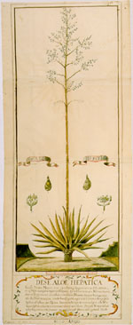

Tekening van en rapport over een ‘aloe hepatica’ in de verschillende stadia van bloei en zaadvorming. Nederlands. Aquarel op papier, 950 x 380 mm. Bewaard met oorspronkelijk omslag. Kaap de Goede Hoop, 1751. -- (BPL 126 G)
De afgebeelde plant is in werkelijkheid geen aloë, maar een agave, die zich bevond in de plantentuin van de Verenigde Oost-Indische Compagnie aan de Kaap de Goede Hoop. De tekening werd ongetwijfeld door toedoen van Rijk Tulbagh, van 1751 tot 1771 gouverneur van de Compagnie aldaar, vervaardigd. Hij leverde vanuit zijn functie een belangrijke bijdrage aan de studie van de planten- en dierenwereld in Zuid-Afrika, maar beschikte, getuige de amateuristische weergave van de plant, niet altijd over de voor dit werk geschoolde krachten.
Tulbagh stelde de tekening, tegelijk met een zending vogels, insekten en gedroogde planten, ter beschikking van de Leidse universiteit, zoals uit de adressering op het omslag blijkt.
Literatuur
- Vergelijk: Vijfhonderd jaar Suid-Afrikaanse geskiedenis. Onder red. van C.F.J. Muller [e.a.]. 3e, herz. dr. Pretoria [etc.] 1980, p. 72-79.
| vorige pagina | top pagina |